Lab 2 - Getting and Summarizing Data
Overview of Lab 2
In this week’s lab, we will learn the basics of pulling data from a public data source (in this case, IPUMS), downloading the data in a format we want (in this case Stata), and using that data to create some variables and a summary table. We will be working with data from the American Community Survey and decennial census conducted by the U.S. Census Bureau. The data is rich and provides a great deal of information about the U.S. population in terms of income, demographics, and so on. For our lab, we will focus simply on the living conditions, demographics, family attributes, and income mix at various levels of total income. We’ll start by using IPUMS to download the data, which requires an IPUMS login.
Downloading Data
We will start our workflow with a typical routine:
- Download the data.
- Move the data to our data subfolder in our class folder.
- Begin a new .do file with our opening lines.
But first, let’s download the data. IPUMS provides a harmonized set of files to enable downloading data across years and standardizing the format of variables for ease of use. Part of how that’s done is using queries in the backend (we’ll get to that later in the semester) prompted by a fairly straightfoward user interface (UI) on the frontend. We’ll be using the IPUMS ACS data.
The link to the landing page should look like this:
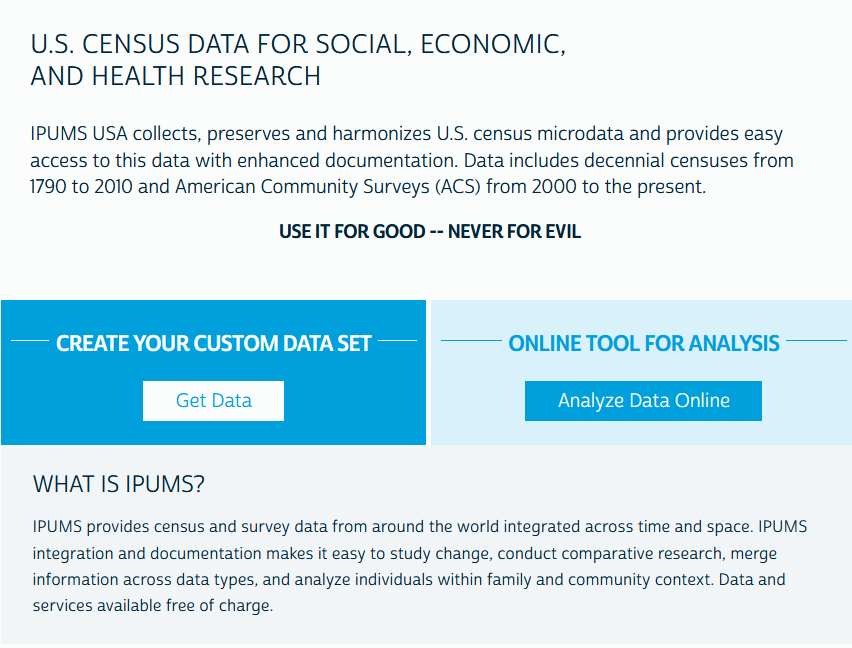
We want to do our own analysis using our own tools, so let’s go ahead and click “Get Data.” From there, we’ll land at a starting menu that looks like this:
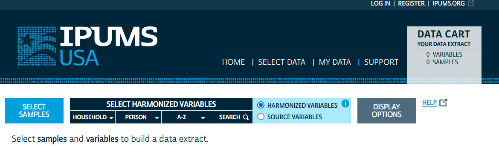
From here, we’ll want to make sure we are logged in - use the login button at the top right of the screen - and then we will begin by selecting samples using the big blue “Select Samples” button on the left. Scrolling down a bit, you will see a list of potential samples with some already checked.
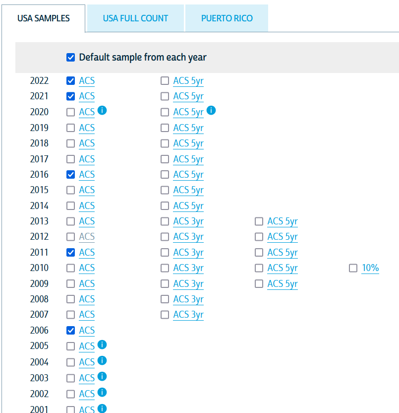
The ACS is collected annually and sampled households are not eligible for resample for 5 years. There are a variety of caveats, subsamples, and other considerations that warrant reading some of the codebooks when doing something more sophisticated than a class exercise, but for our purposes, we will be using fairly common variables collected in most years in a pretty standard format. The sample years selected will determine the set of variables that are available in all years and the samples to be included in our final dataset. For the purposes of this exercise, let’s just select 2018, 2019, 2021, and 2022 and deselect everything else in this window. We will then hit “Submit Sample Selections” at the top of the screen.
Notice that the data cart at the top now has “4 samples” in it: 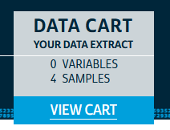
This means that as we look at variables, we’ll have indicators for the variable availability in those four samples (i.e., the four years of the ACS we chose) and we can assemble a dataset with consistent variables measured in all the years we’ve chosen. We’ll select variables using the “Household” dropdown and the “Person” dropdown. Let’s start with “Household.” Hovering your mouse over the dropdown should pull up a submenu with several options. For now, we’ll select “Geographic,” which will bring us here:
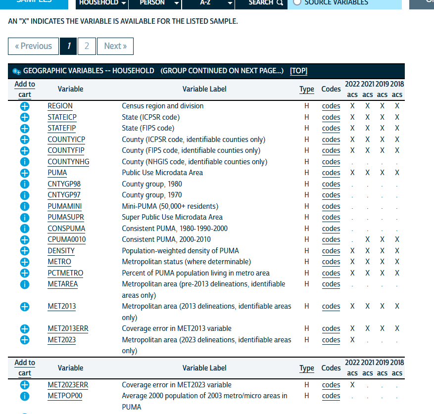
On the right, you will see columns underneath the years of ACS data we have selected. An “X” in those columns indicates that a given variable (the rows) is available in that year of data. In general, it’s a good idea to only include variables available in all years you are working with, at least as you’re learning and getting familiar with data analysis.
On the left, you’ll see little blue circles with plus signs next to different variable names. Clicking those will add the variable to our dataset request and convert it to a box with a checkmark . For now, we will just add “REGION,” “STATEFIP,” and “COUNTYFIP” to our data by clicking the circled plus marks.
Notice that IPUMS shows us a variable name and a slightly more detailed variable label. You can also click on the variable name and see a detailed description of the variable from its codebook entry and documentation. IPUMS divides this cleanly so you can see the codes, any technical notes about the construction of the variable, and even the specific text of the question from the survey. This is the Gold Standard of data documentation to which all public data warehouses should aspire. It also captures a nested version of good data documentation practices: a variable name that is intuitive for technical users and consistent across years, a label that is a short description in plain language, and detailed documentation about how the variable is collected and what it measures.
Now, we will collect some demographic, education, and income variables.
- Under the “Person” menus, go to the “Demographic” submenu and select “SEX,” “AGE,” and “MARST.”
- Go to the “Race, Ethnicity, and Nativity” submenu of the “Person” menu and select “RACHSING,” “RACE,” “HISPAN,” and “CITIZEN.”
- Under the “Education” submenu, select “SCHOOL,” “EDUC,” and “DEGFIELD.”
- Under the “Income” submenu, select the following:
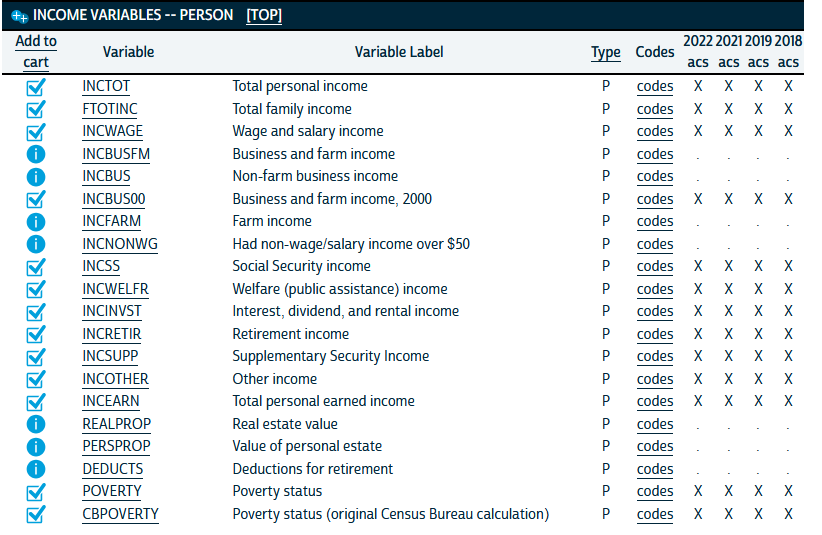 5. Under the “Work” submenu, select “EMPSTAT” and “LABFORCE.” 6. Finally, under the “Place of Work and Travel Time,” select “TRANWORK,” “CARPOOL,” “RIDERS,” and “TRANTIME.”
The data cart at the top right should now show 37 variables across 4 samples selected: 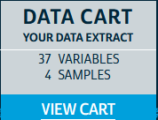
Now, in the data cart, we are going to click on “View Cart.” This will bring us to our data extraction tool.
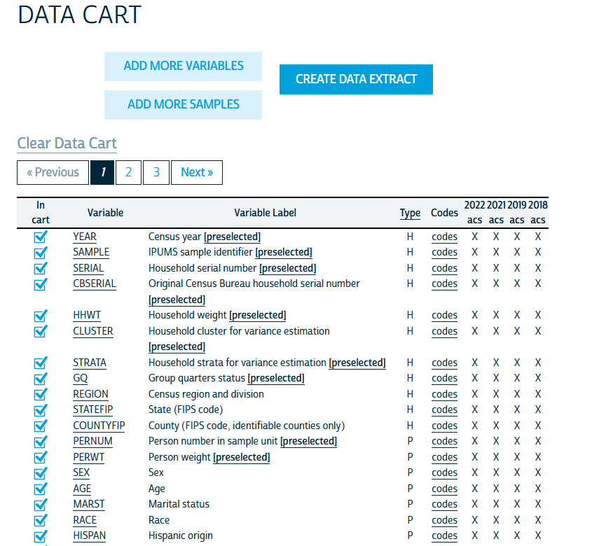
Here, you’ll see a list of your variables and their availability across your selected samples (in this case, years of ACS data). We will then click the “Create Data Extract” button at the top. This will take us to a preview of our extract:
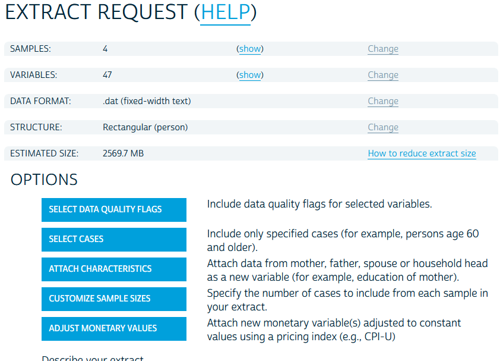 Notice that the format for the data is a .dat file type. This is a flat file. Technically Stata has the tools to import data from any file type, which we will get into later in the semester, but IPUMS has the decency to provide us options for what format we want our data in. We will click the change link in the format row and arrive here:
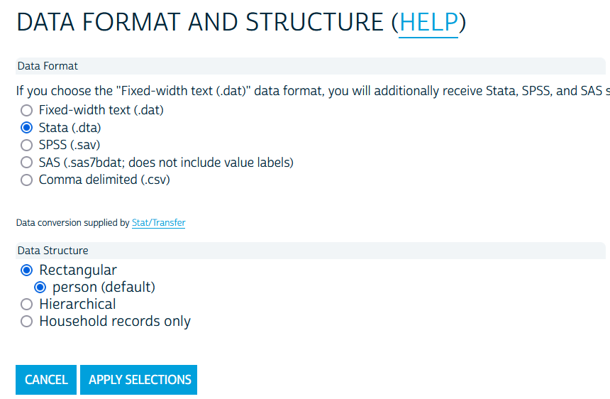
We will go ahead and select “Stata” and “Apply Selections.” We won’t select any of the other options and will simply click “Submit Extract” at the bottom.
Take note that when the .dat flat file is selected, IPUMS provides a zip folder with code to import the data into a variety of statistical software. The code for Stata will be a .do file and you would simply edit the code to point to where the .dat file is saved on your computer and you can run the do file in Stata and import the code that way. This is a useful means by which many government agencies share public data in a way that is flexible for all users. Another Gold Standard practice for data sharing.
You will notice that you will be at an extraction screen after submitting the request. The time it takes to process a request depends on how many variables and how many years you select, among other things. The more complicated the request, the longer the extraction processing time. IPUMS sends an email when your request is ready and you will have a link to download the data in this screen when it’s ready.
Note that this will result in a very, very large dataset. For the purposes of this activity in class, I have created a random sample from the above data request of 200,000 observations that we can use for the exercise. It can be downloaded here.
Using the Data
Cleaning the Data
In lab 1, we learned the basics of working with Stata and some rudimentary tools for data cleaning: creating a new categorical variable using a set of indicator variables. Here, we are going to learn some shortcuts to re-coding variables and creating sets of mutually exclusive indicators1 from a categorical variable. We are also going to create variables that are functions of other variables. Once we have the elements we need for a table, we are going to create a table that presents a variety of variables for the full sample, by the 90/10 income split, and by White and Non-White.
User-Written Packages
First, we are going to install two packages that are not part of the standard Stata package set. Stata packages all get housed in an internet archive that can be accessed directly in Stata using the ssc install command. We will install fre, which is a user-written package that implements the tabulate command that we have already used in Stata but includes both variables codes and labels in the output. As you will come to see, this is very useful for getting a sense of how data is coded when we are at the cleaning stage of the data.
We are also going to install estout, which is actually a library of commands that all provide a very flexible way to make exportable tables from estimates stored in Stata’s temporary memory.
To do this, run:
ssc install fre, replace
ssc install estout, replaceCreating New Variables
For this exercise, we are going to look at the characteristics we have overall and separately by income and some rough binaries of race and ethnicity. To do that, we will want to recode some variables using a combination of the recode command, attaching an option to the tab command, and creating a variable that is a function of other variables. Let’s start with the tab command because it’s quite straightforward.
When we are making tables with categorical variables in them, it’s quite useful to have indicator variables for each category. We could do this using the gen and replace route that we took in lab 1, but an alternate route is to use the tab command and attach the , gen(stub) option. Let’s do this for race using the variable rachsing to get five indicator variables for each category of race.
tab rachsing, gen(racecat)Note that the racecat part in the gen option is telling Stata to name the indicator variables for each category racecat# where # is the number of the category.
Your output should look like this:
. tab rachsing, gen(racecat)
race: simplified |
race/ethnicity identification | Freq. Percent Cum.
------------------------------+-----------------------------------
white | 6,634,498 68.35 68.35
black/african american | 974,520 10.04 78.39
american indian/alaska native | 84,561 0.87 79.26
asian/pacific islander | 591,554 6.09 85.35
hispanic/latino | 1,421,558 14.65 100.00
------------------------------+-----------------------------------
Total | 9,706,691 100.00and we should have a new series of indicators in our variable list:
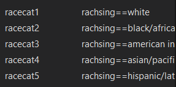
We will go ahead and do the same thing for marital status (marst) and biological sex (sex).
tab marst, gen(marital)
tab sex, gen(bsex)Now let’s move on to sex, educational attainment, and transit mode taken to work. Let’s use fre to take a look at these categorical variables.
fre educ tranworkHere, we get a series of tables that look like:
. fre educ tranwork
educ -- educational attainment [general version]
----------------------------------------------------------------------------------
| Freq. Percent Valid Cum.
-------------------------------------+--------------------------------------------
Valid 0 n/a or no schooling | 778620 5.95 5.95 5.95
1 nursery school to grade 4 | 934263 7.14 7.14 13.10
2 grade 5, 6, 7, or 8 | 828813 6.34 6.34 19.43
3 grade 9 | 266110 2.03 2.03 21.47
4 grade 10 | 292384 2.24 2.24 23.70
5 grade 11 | 328913 2.51 2.51 26.22
6 grade 12 | 3873003 29.61 29.61 55.83
7 1 year of college | 1488821 11.38 11.38 67.21
8 2 years of college | 882180 6.74 6.74 73.95
10 4 years of college | 2075039 15.86 15.86 89.82
11 5+ years of college | 1331923 10.18 10.18 100.00
Total | 1.31e+07 100.00 100.00
----------------------------------------------------------------------------------
tranwork -- means of transportation to work
----------------------------------------------------------------------------------------------------
| Freq. Percent Valid Cum.
-------------------------------------------------------+--------------------------------------------
Valid 0 n/a | 7103702 54.31 54.31 54.31
10 auto, truck, or van | 4813653 36.80 36.80 91.11
20 motorcycle | 8748 0.07 0.07 91.18
31 bus | 64683 0.49 0.49 91.67
32 bus or trolley bus | 28865 0.22 0.22 91.89
34 light rail, streetcar, or trolley (carro | 4002 0.03 0.03 91.92
público in pr) |
35 streetcar or trolley car (publico in puerto | 816 0.01 0.01 91.93
rico, 2000) |
36 subway or elevated | 79579 0.61 0.61 92.54
37 long-distance train or commuter train | 26096 0.20 0.20 92.74
38 taxicab | 10578 0.08 0.08 92.82
39 ferryboat | 2567 0.02 0.02 92.84
50 bicycle | 28359 0.22 0.22 93.05
60 walked only | 162531 1.24 1.24 94.30
70 other | 59606 0.46 0.46 94.75
80 worked at home | 686284 5.25 5.25 100.00
Total | 1.31e+07 100.00 100.00
----------------------------------------------------------------------------------------------------Notice how many categories there are? That’s probably going to be overwhelming to look at in a table all together. We might want to collapse these categories into higher level categories. To do this, we’ll use a new command: recode. This will be much simpler than our previous route of creating a new variable and then replacing each value of the variable with a new value for each category. How tedious!
We’ll start with educ since it’s the most straightforward. Here, we might really only be concerned with a breakdown of people with no college, some college, and a Bachelor’s degree or more. Maybe we go an extra mile and include a separate breakout for graduate degrees. Here, we’ll use recode to define a smaller set of categories that include multiple categories from the original variable.
recode educ (0/5 = 1 "Less than HS") (6 = 2 "HS") (7/8 = 3 "Some college") (10 = 4 "College degree") (11 = 5 "More than Bachelor's"), gen(seduc)Now let’s do the same with mode of transportation taken to work. We can set up a simple set of categories for walking, biking, taking a car, and taking mass transit (broadly defined). Then we will create a separate category for worked at home and other.
recode tranwork (10/20 38 = 1 "Motor vehicle") (31/37 39 = 2 "Mass transit") (50 = 3 "Bicycle") (60 = 4 "Walked") (70 = 5 "Other") (80 = 6 "WFH"), gen(stransit)Now let’s go ahead and use our tab command to create indicators from our now shortened categorical variables.
tab seduc, gen(seduc)
tab stransit, gen(transit)Finally, we are going to work with continuous variables to create some variables that are a function of other variables. In particular, we want to see a little bit about how people with different incomes vary in the source of their income (e.g., wages, cash transfer programs, public benefits, etc.). To do that, we are going to take advantage of the rich set of income variables provided by the ACS. Let’s start by dealing with some quirks of the income data. The total personal income variable can be negative and includes a code of 9999998 for missing values and 9999999 for cases where income is not applicable for collection. Let’s go ahead and change those to missing.
replace inctot = .a if inctot >= 9999998Always check the codebook tabs for variables you will be using! I did the grunt work for the lab here and recorded the appropriate missing codes, but these kinds of subtle interpretations of variables can really bias your answers if you don’t check the codebook ahead of time and understand how varaibles are coded in your data.
Now, we’re going to have to do that for all the income source variables too.2 Given that there’s several of them, this could be tedious to code. But this makes for a good opportunity to learn a little trick: a foreach loop. See, this loop will let you apply the same process to many variables at once, perfect for situations where the same data change needs to be applies to many variables. To do it, we will put all of the variables in a foreach command and label them something simple, like “X”, and then use that stand-in in our code. It will look like this:
foreach x of varlist incwage incbus00 incss incwelfr incinvst incretir incsupp incother{
replace `x' = 0 if `x' >= 999998
}Now we have our cleaned variables and we can calculate the percent of total income that comes from the different sources captured by the ACS. Here again, we are applying the same formula over and over, so we can use a foreach loop here too.
foreach x of varlist incwage incbus00 incss incwelfr incinvst incretir incsupp incother{
gen `x'_prc = ((`x' / inctot)*100)
}An alternative way to code the above would be to simply generate each variable on it’s own line with a gen command. That would look like this:
gen incwage_prc = ((incwage/inctot)*100)
gen incbus00_prc = ((incbus00/inctot)*100)
gen incss_prc = ((incss/inctot)*100)
gen incwelfr_prc = ((incwelfr/inctot)*100)
gen incinvst_prc = ((incinvst/inctot)*100)
gen incretir_prc = ((incretir/inctot)*100)
gen incsupp_prc = ((incsupp/inctot)*100)
gen incother_prc = ((incother/inctot)*100)Both routes will get you the same set of variables describing the proportion of personal inctome from various sources among Americans.
Finally, we are interested in looking at how these variables look at different points of the income distribution, so we should have some categorical variables that capture different points in the income distribution! Here, we are going to look at different points in the distribution of family income and Stata makes this really easy for us. We are going to use the xtile command which tells State to rank all observations on a given variable, identify the number of quantiles you need, and create a new categorical variable that identifies which quantile each observation is in. We’re going to look at the 90th and 10th percentile, so we will want to specify 10 quantiles. We will also look at White and Non-White splits, so we can code our Non-White indicator here too.
replace ftotinc = .a if ftotinc >= 9999998
xtile finc_q = ftotinc, nq(10)
gen nonwhite = 0
replace nonwhite = 1 if rachsing > 1Making Tables
We are now ready to make our first table! To do so, we are going to draw on some things we’ve already learned. First, we are going to use the sum command. Second, we are going to use three commands from the estout package we installed earlier: estpost to tell Stata to post the estimates from the next command into its temporary memory, est sto to tell Stata to label those stored estimates with a name we give it, and esttab to tell Stata to put some of those estimates into a nice table for us. When we do this, we will run the sum command for the full sample and then for the sub-samples we want.
First, let’s return to what we are trying to do here. Our goal from the beginning was to look at how people in the top and bottom of the income distribution differ in terms of education, family characteristics, sources of income, and - just out of curiosity - mode of transportation used for commuting to work (among those employed). Here, we are functionally just trying to describe differences between people in the top decile of income and those in the bottom decile of income. We refer to this as descriptive analysis and we often describe the world with summary statistics.
Let’s start with a simple table of just average income and the percent of income from wages (incwage_prc, which we created with our second loop in the previous section). To do this we will start with estimating summary statistics of those two variables using sum, but we will add our new command estpost so that Stata stores these estimates in its memory.
The sum command in Stata estimates a whole set of statistics for all of the variables in the variable list you enter with the command. These statistics are all different ways of summarizing the central tendency and spread of the variable in your sample. These include the five-number summary of the distribution (the minimum value, 25th percentile, median, 75th percentile, and maximum value), the mean, the standard deviation, and the variance of the variable (and several others - see the output from adding , detail like we did in lab 1). All of these statistics can be stored in Stata’s memory to be recalled later for things like making tables or making figures of data.
estpost sum inctot incwage_prcWe will get output from something that looks like this:
. estpost sum inctot incwage_prc
| e(count) e(sum_w) e(mean) e(Var) e(sd) e(min) e(max) e(sum)
-------------+----------------------------------------------------------------------------------------
inctot | 168171 168171 46004.99 4.81e+09 69371.54 -8500 1309000 7.74e+09
incwage_prc | 147621 147621 63.64085 503210.3 709.3732 -1000 200000 9394726 Our sample average income is about $46,005 per year and about 63% of that income comes from wages and salary for the average person in the sample. Let’s go ahead and store this under a label so we can put it in a table.
est sto allIn the code about, est sto is my command and it’s short for “estimates store.” The all part of the command is a label for the estimates for future reference. You can use any label you like (no spaces), but I typicall keep them short and snappy so that referencing them later is easy. In this call, we are estimating summary statistics of income and percent of income from wages using the full sample - or all observations - so I use the label all for clarity.
Now, let’s make our first table with just these two variables and just their averages.
esttab all using "output\table1a.csv", cell(mean) replaceHere, esttab is the command for creating an “estimates table” containing the estimates stored under the label all. The using part of the code tells Stata to create a .csv file named table1a in the output subfolder of our command drive (in this case, the rpad504 class folder). CSV files can be opened and edited in Excel and copied and pasted into a word doc. The options I have after the comma tell Stata to enter the means of the variables stored under all inthe cells of the table I am creating and to replace any file in output named table1a.csv with the new table I am making with this line of code.3 Remember that all is the label I have for all of the summary statistics of two variables for all observations in the sample. We will expand our variables list and samples in a table shortly.
I am keeping things simple by using a format that works cleanly in Excel. You can also used the “.rtf” extension for a “rich text file” that can be opened directly in Word and also copied and pasted into a report or document you are using. There are more advanced file formats too that can really expand how much you can directly output your table into a document and print it into a formal report that is already properly formatted, but that is a little more advanced. I am just flagging this here because you would still use this base code for creating these tables in Stata.
But first, our simple table should look like this: 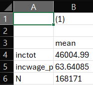
Notice a few things. First, this is very basic. Second, the variables are just listed with their variable names - not very attractive or intuitive. We can have Stata use variable labels to clean that up a bit for us for variables we have labled. Finally, this doesn’t let us compare high and low income households. So in the next version of the table, we are going to add the rest of the income variables, add the label option, and add columns for high- and low-income sub-samples.
estpost sum inctot incwage_prc incbus00_prc incss_prc incwelfr_prc incinvst_prc incretir_prc incsupp_prc incother_prc
est sto all
estpost sum inctot incwage_prc incbus00_prc incss_prc incwelfr_prc incinvst_prc incretir_prc incsupp_prc incother_prc if finc_q == 1
est sto low
estpost sum inctot incwage_prc incbus00_prc incss_prc incwelfr_prc incinvst_prc incretir_prc incsupp_prc incother_prc if finc_q == 10
est sto high
esttab all low high using "output\table1b.csv", cell(mean) label replaceNotice a few things in the code. First, I estimate the same summary statistics on the same set of variables overall and for my two subsamples. Two get summary statistics for my subsamples I simply add if conditions. This will give me “conditional means” or the mean of income and percent of income from various sources conditional on being from a household in the bottom (or top) decile of family income. Second, notice that while I add lines of code to estimate statistics for each subsample, I still only have one line for creating the table. Now, I am simply updating the line to add the labels for including low and high - my labels for the summary statistics for low-income households and high-income households, respectively. Finally, I added the label option to tell Stata to use variable labels in the table rather than the less intuitive and details variable names. My table now looks like this:
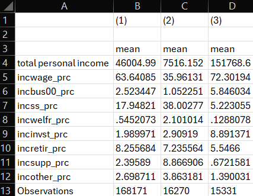
Now we have 3 columns, helpfully labeled by Stata, showing the means of all of our variables overall and separately by decile. And we can see that the label option used the label for inctot instead of the variable name. Unfortunately, we never assigned variable labels for the labels we created! I present this so you can see the downstream usefulness of always adding labels to variables when you create them. I’d also point out that the label for inctot is sort of weak - it does not describe units and is all lower case. We’d typically like to see something more polished in a real table. Let’s re-label our variables now in Stata.
label var inctot "Total personal income ($)"
label var incwage_prc "% of income from wages/salary"
label var incbus00_prc "% of income from business or farm revenue"
label var incss_prc "% of income from Social Security benefits"
label var incwelfr_prc "% of income from cash welfare benefits"
label var incinvst_prc "% of income from investment returns"
label var incretir_prc "% of income from retirement income"
label var incsupp_prc "% of income from supplemental security income"
label var incother_prc "% of income from other sources"Now, after running the code to label our variables more clearly, let’s re-run the same table command.
esttab all low high using "output\table1b.csv", cell(mean) label replaceOur table looks much better!

One final set of edits and I think we’ll have a nice table. For readers, it’s not at all obvious how and why columns 1, 2 and 3 are different from one another. We know, but they likely don’t. And we also might want to know a little something about the spread of our variables. And we definitely don’t need so many decimals after the decimal place in our table presentation of estiamtes. In the final stage of our table making, we are going to add some options to label our columns, add standard deviations to our cells, and format the stats in our cells. Once again, we are just going to edit our last line of code, because everything else has already been done.
esttab all low high using "output\table1c.csv", cell(mean(fmt(2)) sd(fmt(2) par)) unstack compress mtitles("All" "Bottom 10%" "Top 10%") label replace In the code above, we use sd to add standard deviations to our table. If we were just including a new statistic in the cells of our table, we could just add it in the parentheses to read cell(mean sd). But we wanted to also modify the formats here, so next to each statistic, we add parentheses for options applied to that statistic (e.g., mean() and sd()). In those parentheses, we add fmt(2) to say “Stata, I want this statistics to have a format that rounds to the second decimal point. Since we have two statistics now, we want to differentiate them, so we follow convention and put our measure of spread - the standard deviation - in parentheses as well by also including the par piece of our code. Our final piece of estimate presentation formatting, we add options unstack and compress to tell Stata that the table can stack the standard deviations underneath the means for each variable and make sure there are no blank spaces between variables. This keeps our table compact and clean. After dealing with our presentation of our estimates, we include the mtitles (short for model titles) command to add labels to each column in our table. Since we have a column for each sample - the full sample, the low-income sample, and the high-income sample - we can make our labels”All,” “Bottom 10%,” and “Top 10%.”
In practice, most tables follow very similar formats and you are often only changing a few pieces of this base code for a table at a time. Obviously the variables in the table will change across contexts, but things like formatting and what statistics to include in the cells will often be pretty constant across contexts.
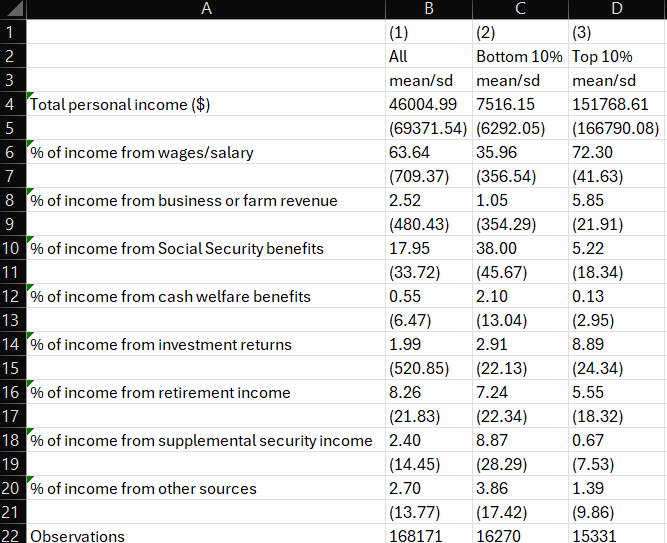
Look at that! A nice, formatted table worthy of sharing with minimal edits needed to format it. Our rows provide clear, easily interpretable descriptions of the variables, our columns have numeric headers for reference and labels to provide readers a quick understanding of what sample is included in each column, and we present both means and standard deviations for our variables.
When writing, it’s useful to have your columns numbered in your tables so that you can discuss results and draw reader attention to a column with the results you’d like to discuss. For instance, if this was table 1 in a report, I might write, “As a comparison of columns 2 and 3 in Table 1 shows, people in the bottom decile of household income have a much higher share of their earnings from cash transfer programs, such as Social Security and welfare benefits, relative to people in the top decile.”
Our full list of variables can also be added to the code and we can add two more columns to our table - White and Non-White - for some additional descriptive analysis of sub-samples of policy interest.
It will look something like this:
estpost sum inctot incwage_prc incbus00_prc incss_prc incwelfr_prc incinvst_prc incretir_prc incsupp_prc incother_prc racecat1 racecat2 racecat3 racecat4 racecat5 seduc1 seduc2 seduc3 seduc4 seduc5 transit1 transit2 transit3 transit4 transit5 transit6 transit7 marital1 marital2 marital3 marital4 marital5 marital6 bsex1 bsex2
est sto all
estpost sum inctot incwage_prc incbus00_prc incss_prc incwelfr_prc incinvst_prc incretir_prc incsupp_prc incother_prc racecat1 racecat2 racecat3 racecat4 racecat5 seduc1 seduc2 seduc3 seduc4 seduc5 transit1 transit2 transit3 transit4 transit5 transit6 transit7 marital1 marital2 marital3 marital4 marital5 marital6 bsex1 bsex2 if finc_q == 1
est sto low
estpost sum inctot incwage_prc incbus00_prc incss_prc incwelfr_prc incinvst_prc incretir_prc incsupp_prc incother_prc racecat1 racecat2 racecat3 racecat4 racecat5 seduc1 seduc2 seduc3 seduc4 seduc5 transit1 transit2 transit3 transit4 transit5 transit6 transit7 marital1 marital2 marital3 marital4 marital5 marital6 bsex1 bsex2 if finc_q == 10
est sto high
estpost sum inctot incwage_prc incbus00_prc incss_prc incwelfr_prc incinvst_prc incretir_prc incsupp_prc incother_prc racecat1 racecat2 racecat3 racecat4 racecat5 seduc1 seduc2 seduc3 seduc4 seduc5 transit1 transit2 transit3 transit4 transit5 transit6 transit7 marital1 marital2 marital3 marital4 marital5 marital6 bsex1 bsex2 if racecat1 == 1
est sto white
estpost sum inctot incwage_prc incbus00_prc incss_prc incwelfr_prc incinvst_prc incretir_prc incsupp_prc incother_prc racecat1 racecat2 racecat3 racecat4 racecat5 seduc1 seduc2 seduc3 seduc4 seduc5 transit1 transit2 transit3 transit4 transit5 transit6 transit7 marital1 marital2 marital3 marital4 marital5 marital6 bsex1 bsex2 if nonwhite == 1
est sto nonwhite
esttab all low high white nonwhite using "output\table2.csv", cell(mean(fmt(2)) sd(fmt(2) par)) unstack compress mtitles("All" "Bottom 10%" "Top 10%" "White" "Non-White") label replace Footnotes
“Mutually exclusive” means that each observation can only be in one category. Ideally, the sum of the categories adds up to 100 percent.↩︎
The income source variables have a slightly different coding schema - 6 digits instead of 7 - but the same general formula.↩︎
This avoids hitting errors when you already created a table of the same name, but be careful! If you are creating multiple tables in a single .do file, this can overwrite all previous tables with just that last one you created. Just be sure your outputs have unique names in your code.↩︎